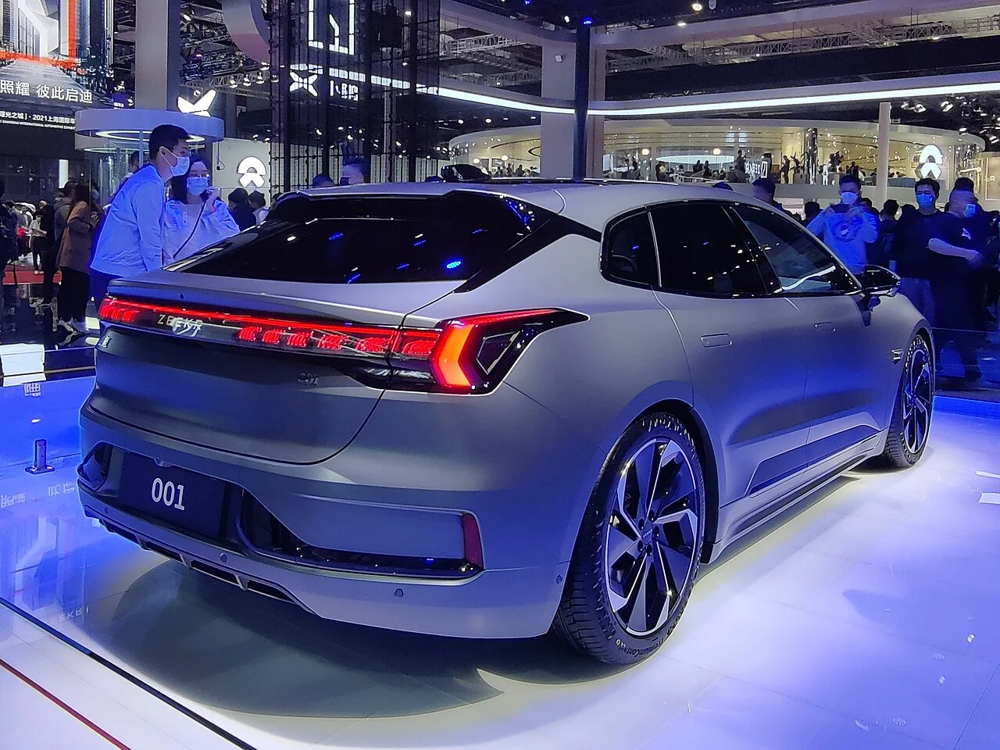
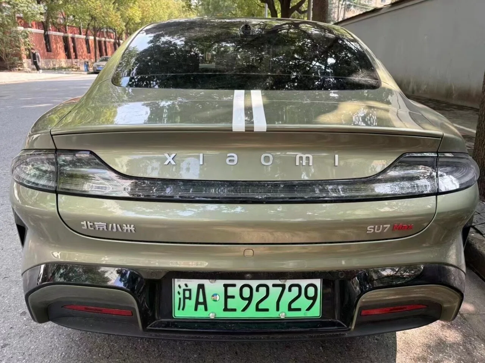
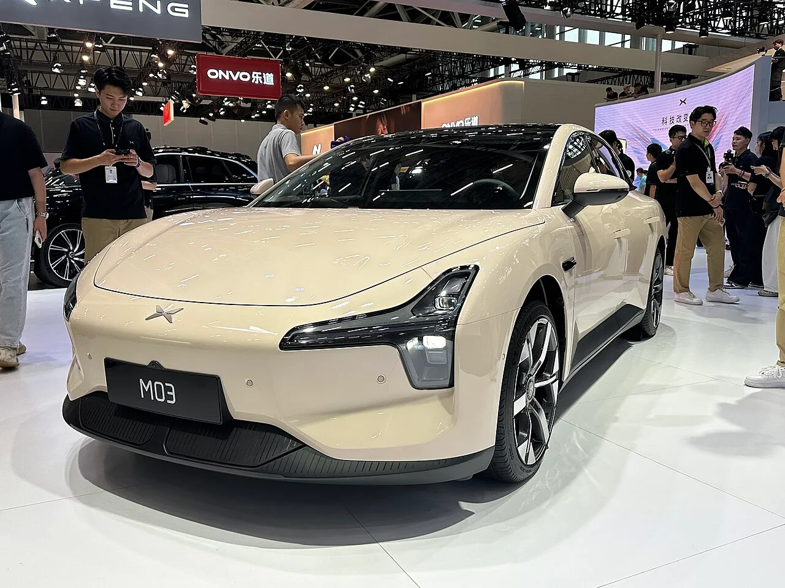

▲ 립모터는 8월 10만 3,129대를 인도해 신흥 EV 업체 가운데 가장 많은 물량을 기록했다 ⓒ Wikimedia Commons
1. 8월 표 전체
중국 주요 완성차의 8월 인도량이 한꺼번에 나왔습니다. 상위권 순서는 크게 변하지 않았습니다.
| 업체 | 8월 인도량 | 전년 대비 | 1~8월 누적 |
|---|---|---|---|
| BYD | 440,293대 | +17.84% | 2,668,015대 (-6.84%) |
| 상하이차(SAIC) | 357,007대 | - | - |
| 체리 그룹 | 280,128대 | - | - |
| 지리 오토 | 270,194대 | - | - |
| 상하이GM우링 | 130,870대 | - | - |
| 립모터 | 103,129대 | +80.7% | 560,883대 |
| 화웨이 HIMA | 42,101대 | -5.52% | 329,739대* |
| 샤오펑 | 39,107대 | +3.71% | 243,111대 |
| 리오토 | 37,679대 | +32.07% | 261,619대 |
| 지커 | 36,981대 | +109.8% | 251,188대 |
| 니오 | 35,836대 | +14.47% | 262,893대 |
| 샤오미 | 30,000대 이상 | - | 246,322대 이상 |
* 화웨이 HIMA 누적은 CPCA 소매 판매 기준
BYD의 44만 293대는 전년 대비 17.84% 증가한 숫자입니다. 다만 이 회사가 1위라는 사실 자체는 새로운 소식이 아닙니다. 정작 눈여겨볼 것은 그 안의 구성입니다.
8월 해외 판매가 18만 9,466대로 사상 최대였습니다. 전년 대비 134.45% 급증이고, 이 달 전체 물량의 43.03%를 차지합니다. 반대로 중국 내수는 14.34% 줄었습니다.
1~8월 누적으로 보면 더 분명해집니다. 누적 266만 8,015대로 전년 대비 6.84% 감소했습니다. 8월 한 달은 늘었는데 연간 누적은 줄어든 상태입니다. BYD의 성장은 지금 전적으로 수출이 떠받치고 있고, 본국 시장은 역성장 중이라는 뜻입니다.

▲ BYD의 8월 성장은 해외에서 나왔다. 해외 판매 18만 9,466대는 전체의 43%에 해당한다 ⓒ Wikimedia Commons
승용 기준 구성은 BEV 25만 6,230대(59.1%), PHEV 17만 7,154대(40.9%)입니다. 순수 전기차 비중이 6대 4로 앞섭니다.
이 구조를 알고 나면 표의 나머지가 다르게 읽힙니다. 중국 내수가 줄어드는 상황에서 아래 순위가 재편되고 있다면, 그것은 파이가 커져서가 아니라 같은 파이 안에서 자리가 바뀌고 있다는 뜻이기 때문입니다.
2. 립모터가 2위 그룹을 정리했다
립모터가 8월 10만 3,129대를 인도했습니다. 전년 대비 80.7% 증가이고, 두 달 연속 10만 대를 넘겼습니다. 5개월 연속 최고 기록 경신이기도 합니다.
비교하면 격차가 분명합니다. 같은 달 샤오펑 3만 9,107대, 리오토 3만 7,679대, 지커 3만 6,981대, 니오 3만 5,836대입니다. 립모터 한 곳이 이 네 회사를 합친 것과 비슷한 물량을 소화했습니다.
동력은 저가 라인업입니다. 8월 11일 출시한 A05 준중형 세단의 가격은 6만 3,900위안, 우리 돈 약 1,270만 원 수준입니다. 같은 A 플랫폼의 A10은 청두 모터쇼 기간에 누적 생산 10만 대를 넘겼습니다.

▲ 지커는 8월 3만 6,981대로 전년 대비 109.8% 늘며 증가율 1위를 기록했다. 사진은 지커 001 ⓒ Wikimedia Commons
다만 속도는 느려지고 있습니다. 전월 대비 증가율은 1.84%로, 7월의 8.45%에서 크게 떨어졌습니다. 3월 이후 가장 낮은 수치입니다. 절대량은 최고치인데 가속은 붙지 않는 구간에 들어섰습니다.
3. 니오의 두 얼굴
니오는 8월 3만 5,836대를 인도해 14.47% 늘었습니다. 숫자만 보면 나쁘지 않습니다. 그런데 발표 당일 홍콩 상장 주식이 9% 급락했습니다.
이유는 브랜드별 구성에 있습니다. 니오 본 브랜드는 늘었지만, 보급형 서브 브랜드 온보(Onvo)가 부진했습니다. 전체 숫자를 본 브랜드가 떠받친 형태입니다. 전월 대비로는 0.27% 감소했습니다.
이 구조가 왜 문제가 되는지가 핵심입니다. 온보는 판매량을 키워 규모의 경제를 만들라고 만든 브랜드입니다. 그 브랜드가 안 팔리면, 늘어난 전체 인도량이 수익성 개선으로 이어지지 않습니다. 시장이 반응한 지점이 여기입니다.

▲ 니오 ES8은 8월 1만 999대가 인도돼 연간 누적 10만 대에 근접했다 ⓒ Wikimedia Commons
다만 니오는 조정 영업이익 기준으로 흑자 기조를 이어 갔습니다. 제품 구성이 개선되면서 마진이 올라간 결과입니다. 판매 대수와 수익성이 반드시 같은 방향으로 움직이지 않는다는 것을 보여 주는 사례입니다.
4. 화웨이 HIMA는 3개월 연속 감소
화웨이 HIMA는 8월 4만 2,101대로 5.52% 줄었습니다. 전월 대비로도 6.54% 감소했고, 전년 대비 감소는 3개월 연속입니다.
이 표에서 감소를 기록한 몇 안 되는 이름입니다. 화웨이가 여러 완성차와 손잡고 만든 연합 브랜드군인 만큼, 특정 모델의 부진이 아니라 연합 전체의 흐름이 꺾였다는 신호로 읽힙니다.

▲ 샤오미는 8월에도 3만 대 이상을 유지했다. 사진은 SU7 맥스 후면 ⓒ Wikimedia Commons
반면 샤오미는 3만 대 이상을 유지했습니다. 신모델 '스카이 노마드' 출시가 임박한 상황이라, 다음 달 숫자가 이 회사의 실제 체급을 보여 줄 가능성이 큽니다.
5. 남은 4개월의 산수
립모터의 연간 목표는 100만 대입니다. 8월까지 누적 56만 883대로 약 56%를 채웠습니다.
남은 넉 달 동안 필요한 월평균은 약 10만 9,779대입니다. 8월 실적인 10만 3,129대보다 6% 이상 많아야 합니다. 전월 대비 증가율이 1.84%까지 떨어진 상황에서는 만만한 숫자가 아닙니다.

▲ 샤오펑은 8월 3만 9,107대로 올해 두 번째로 높은 수치를 기록했다. 사진은 모나 M03 ⓒ Wikimedia Commons
변수는 해외입니다. 립모터는 8월 B10과 C10 글로벌 모델을 아르헨티나에 투입했습니다. 회사는 2026년 해외 판매 목표를 20만 대로 올려 잡았습니다. 기존 가이던스인 10만~15만 대보다 높은 수치이고, 스텔란티스의 판매망을 쓴다는 전제가 깔려 있습니다.
6. 이 표를 국내에서 봐야 하는 이유
첫째, 여기 있는 회사들이 이미 국내에 들어와 있습니다. BYD는 판매 중이고, 지커는 서울에 전시장을 열었습니다. 8월 표의 순위는 앞으로 국내에 어떤 브랜드가 얼마나 빠르게 들어올지를 가늠하는 선행 지표입니다.
둘째, 물량은 부품과 서비스로 이어집니다. 본국에서 월 10만 대를 만드는 회사와 3만 대를 만드는 회사는 부품 재고 정책이 다를 수밖에 없습니다. 국내 소비자에게는 이 차이가 수리 대기 기간으로 돌아옵니다.
셋째, 가격의 기준선이 여기서 정해집니다. 립모터 A05가 중국에서 1,270만 원대라는 사실은 그 자체로 국내 가격이 되지는 않습니다. 다만 이 원가 구조를 가진 회사들이 유럽과 신흥 시장에서 어떤 값을 매기는지가, 결국 국내 진입 가격의 상한을 결정합니다.
정리하면 이렇습니다. 8월 표의 헤드라인은 BYD의 44만 대였지만, 실제로 바뀐 것은 그 아래 줄입니다. 립모터가 신흥 EV 업체의 기준선을 10만 대로 끌어올렸고, 나머지 회사들은 그 절반도 되지 않는 자리에서 서로를 밀어내고 있습니다.